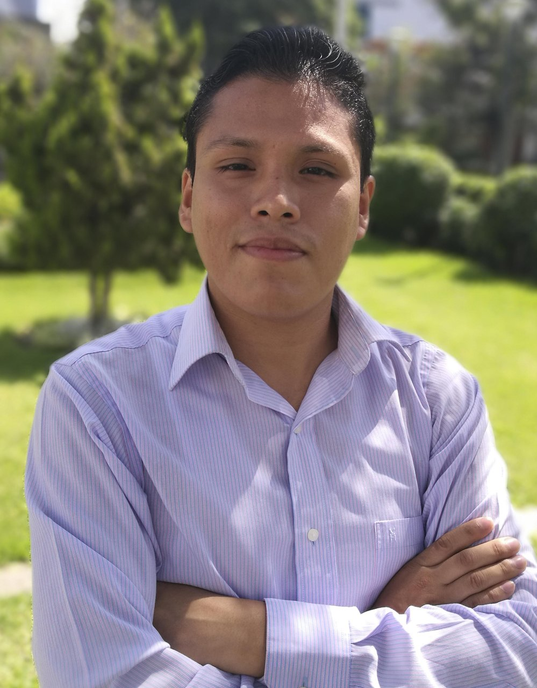

Roberto Jaison Juárez Vargas - CV
Soy un profesional con 9 años de experiencia en la implementación de proyectos de Software, ERPs; además de lograr, mediante el trabajo en equipo, los objetivos orientados a la satisfacción del cliente. Es clara mi orientación funcional; sin embargo, también tengo conocimiento técnicos que han sido parte fundamental en los objetivos que he logrado hasta el momento, además del continuo aprendizaje y lograr aportar a lo que toda empresa busca actualmente: la transformación digital.
Educación
- Instituto Paul Müller
Tecnico en Computacion
2005 – 2005
Carrera no completada
- Prueba0
- Prueba0.5
- Prueba0.7
- Prueba1
- Prueba1.5
- Prueba1.7
- Técnico en Computación
- 2005-2006. Instituto Paul Müller
- Técnico en Computación e Informática
- 2006–2009. Cibertec
- Titulado en Gestión e Innovación en Tecnologías de la Información
- 2010-2010. Cibertec
- Intermedio 02
- 2013-2014. Asociacion Cultural Peruano Britanica (Britanico)
- Estudiante universitario
- 2015-2020. Universidad Peruana de Ciencias Aplicadas

Experiencia profesional 1.1
- Practicante de Sistemas
- 2006-2006. MASTERPESCA SL
- Asistente Soporte Técnico
- 2008–2008. Eficiencia Laboral
- Implementador OLPC
- 2019-2010. Ministerio de Educación del Perú - Minedu
- Analista de Sistemas
- 2010-2015. OFISIS S.A.
- Consultor de sistemas
- 2015-2019. Grupo Softland
- Analista de sistemas sénior
- 2019-Actualidad. Independiente